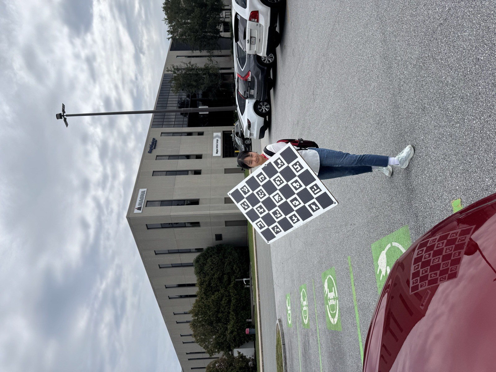

Note · September 2026
The year my employers started asking me to use AI
Two summers ago, the safest answer to “can I use an AI assistant for this?” inside a large company was no. Not because the tools were bad — Copilot and Cursor were already good — but because nobody wanted to be the engineer who pasted proprietary code into someone else's server. By the time I started my second industry internship, the question had inverted. The interesting part is not that the tools improved. It is that the policy moved, and policy moves much more slowly than models do.
What the rules used to be
The restrictive era had a specific trigger. In April 2023, engineers in Samsung's semiconductor division pasted source code and internal meeting content into ChatGPT in three separate incidents within about twenty days; Samsung restricted generative AI on company devices shortly after (CNBC). Within weeks, Apple restricted ChatGPT and, notably for engineers, GitHub Copilot (MacRumors, reporting the Wall Street Journal). JPMorgan Chase had already limited ChatGPT internally earlier that year (AI Business).
Three separate objections were bundled into that single “no”:
- Data boundary. Prompts left the building, and nobody could promise they were not training data.
- Provenance. If a model reproduced licensed code, who owned the result?
- Trust. The output looked confident and was sometimes wrong, and no one had a review process sized for that.
Only the third objection is really about the technology. The first two are about contracts and deployment — and those are exactly the ones that got solved first.
What I saw, two summers apart
I spent 2025 at Amazon Robotics in North Reading and 2026 at Magna Electronics in Lowell. I am not going to describe either company's internal systems; both were covered by confidentiality agreements, and the point does not require them. What I can describe is the shape of the change. In the first summer, AI assistance was something you were careful about and asked about. In the second, it was simply part of the environment I was onboarded into: approved tools, a sanctioned place to use them, and an expectation that I would.
The public record shows the same shift at the corporate level. In November 2025, Reuters reported on an internal Amazon memo, signed by two senior vice presidents, that standardized engineering on Kiro — the company's in-house AI coding tool — told teams no further third-party AI development tools would be approved, and set a target for weekly use across engineering (Reuters, via Yahoo Finance). On the automotive side, Magna's 2026 Annual Information Form lists artificial intelligence among its corporate R&D projects, including “generative engineering tools,” advanced robotics, inspection systems and digital twin simulation (Magna, 2026 AIF). A supplier that ships ADAS software into production vehicles now discusses generative tooling in the same document it uses to disclose risk to investors. That is not a pilot program.
Notice what the Amazon memo is actually about. It is not “use AI.” It is “use this AI.” The restriction did not disappear; it moved from the capability to the vendor. That is what a solved data-boundary problem looks like from the inside: procurement, not prohibition.

The numbers, and the part people skip
Adoption is no longer the interesting statistic. Google's 2025 DORA report, based on responses from nearly 5,000 technology professionals, found that 90% now use AI at work, up about 14 percentage points year over year, with a median of two hours of daily interaction (DORA 2025). Stack Overflow's 2025 survey put it at 84% using or planning to use AI tools, with 47% using them daily (Stack Overflow 2025).
The part people skip is the second column. In the same DORA survey, 30% report little or no trust in AI-generated code. Stack Overflow's trust numbers went down while usage went up: 29% trust the accuracy of the output, against 40% a year earlier, and 66% describe AI answers as “almost right, but not quite” (Stack Overflow). Almost-right is the expensive failure mode. A wrong answer gets deleted in a minute; a plausible one gets reviewed, merged, and found three weeks later by a test that was also generated.
So the honest summary of 2026 is not “AI writes the code now.” It is: nearly everyone uses it, fewer people trust it than last year, and organizations moved anyway. Companies did not wait for trust. They waited for a deployment they could audit.
What changes in safety-critical work
My research is on planning and scheduling for robots with real battery limits, and my industry work has been on perception and control for machines that move near people and property. In that setting, typing was never the bottleneck. Verification was. An assistant that writes a ROS 2 node in thirty seconds does not shorten the week if the week is spent proving the node behaves under sensor noise, dropped frames and a turn-rate limit.
What it does change is where my hours go. The tools have been genuinely useful for bring-up documentation, build and container configuration, test scaffolding, log parsing and the tedious middle of a driver port. They are least useful exactly where I would most want them: anything whose correctness depends on the physical system in front of me. A model will happily produce a calibration routine that compiles and is subtly wrong about a coordinate frame, and the only way to find out is to put the board on the car and drive it.
The practices I have settled on are unglamorous:
- Treat output as a draft from a fast intern. Useful, confident, unverified. It gets reviewed like any other patch — by me — before anyone else spends time on it.
- Never delegate the invariant. Whatever the safety argument rests on — the turn-rate bound, the battery reserve, the stop condition — gets written and checked by hand.
- Keep the data boundary explicit. Approved tools only, and a habit of knowing what is in the prompt before it leaves my machine. That rule did not become obsolete when the policy relaxed; it is the reason the policy could relax.
- Distrust generated tests most of all. A test written from the same misunderstanding as the code will agree with it perfectly.
Where I think this goes
The 2023 question was “am I allowed to use this?” The 2026 question is “can you show what it did?” Agentic tools that edit repositories and run commands raise the stakes of the second question considerably: permissions, logs and blast radius start to matter more than model quality. In regulated domains, I expect the artifact that matters will not be the generated code but the evidence trail around it — what was generated, which human reviewed it, which test covers it, and what happens when it is wrong.
That is a less exciting story than the headlines, and it is the one I would bet on. The interesting engineering question of this decade is not how much code a model can write. It is how we prove that a system built this way is safe — and that question gets answered by people who are careful, not by people who are fast.
Sources
- Samsung bans use of AI like ChatGPT for staff after misuse of chatbot — CNBC, May 2023.
- Apple restricts employee use of ChatGPT and GitHub Copilot — MacRumors, reporting the Wall Street Journal, May 2023.
- Large companies restricting staff use of ChatGPT — AI Business, 2023.
- Amazon pushes in-house AI coding tool Kiro over competitors', memo shows — Reuters via Yahoo Finance, November 2025.
- Magna International, 2026 Annual Information Form — corporate R&D and AI-enabled solutions.
- Announcing the 2025 DORA report, with further analysis at dora.dev — Google Cloud, 2025.
- 2025 Stack Overflow Developer Survey and the accompanying write-up.
This note describes publicly reported facts and my own opinions. It does not describe confidential systems, tooling or data belonging to any employer.